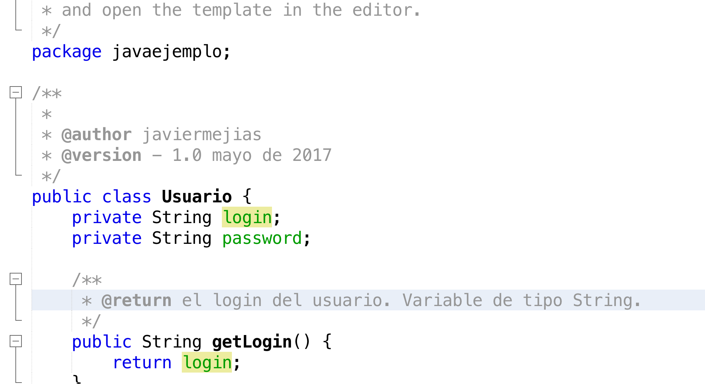
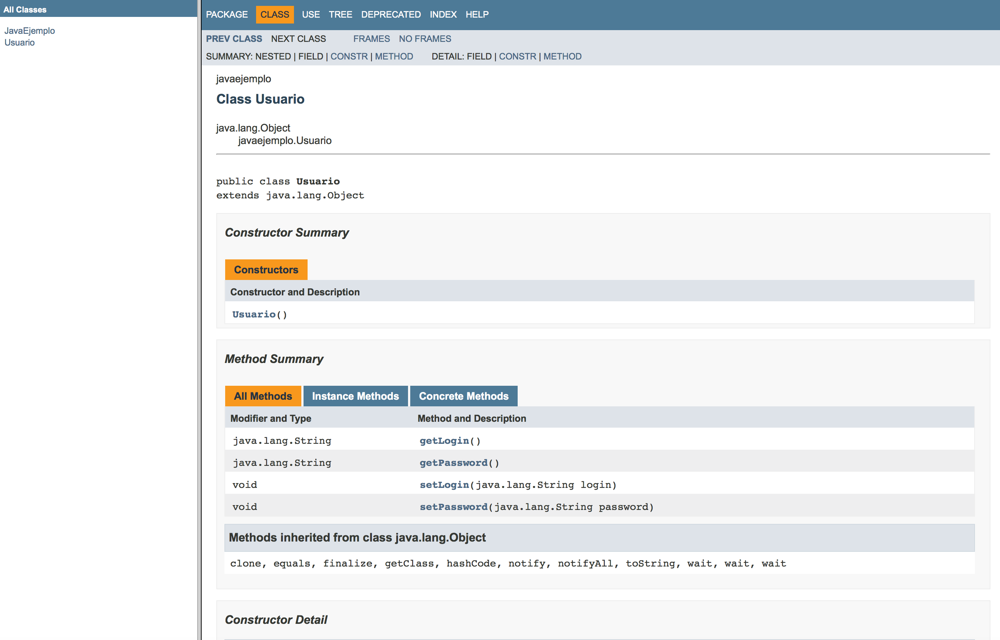

5.4.- Software para generar documentación del código fuente.
Uno de los principales objetivos que debe de satisfacer el software desarrollado es su reutilización. Uno de los axiomas principales radica en no reinventar la rueda. Para ello es fundamental reutilizar el software que ya hemos desarrollado, o bien nosotros u otros programadores, siempre y cuando su licencia lo permita.
Por este motivo es muy importante desarrollar código fuente bien documentado. Además de la documentación propia del código fuente, es importante que exista una documentación de las clases y de ficheros fuentes desarrollados.
Existen herramientas software que facilitan el proceso de generar la documentación a partir de nuestro código fuente. En este epígrafe vamos a centrarnos en JavaDoc, que permite generar la documentación del código fuente escrito en Java y está disponible en NetBeans. Decir que existen programas orientados a otros lenguajes de programación como PHPDoc.
JavaDoc
JavaDoc nos permite obtener la documentación a partir de nuestro código fuente. Para ello en el código tenemos que insertar una serie de etiquetas, las cuales vamos a ver a continuación:
- @author - El nombre del autor del proyecto por ejemplo Javier Mejías
- @version - La versión del proyecto, por ejemplo 2.3
- @see - Añade una referencia a una clase, método o enlace web
- @param - Nombre de parámetro utilizado en una función indicando para que sirve.
- @return - El resultado devuelto por la función.
- @exception - Excepciones que lanza nuestro función o clase.
- @throws - Nombre de la excepción junto con su descripción.
- @deprecated - Añade una alerta al usuario de que el método que sigue a continuación ya no debe usarse y que será eliminado en versiones posteriores.
Introduciremos como comentario comentario al comienzo de cada función y/o clase las etiquetas anteriores que nos interesen. Veamos el siguiente ejemplo.

Una vez tengamos generado todo nuestro proyecto, tendremos que ir a la opción Ejecutar (Execute)->Generar JavaDoc (Generate JavaDoc) y de forma automática se nos generará toda la documentación de nuestro proyecto.

Esta herramienta está disponible en múltiples IDEs, como por ejemplo Eclipse.